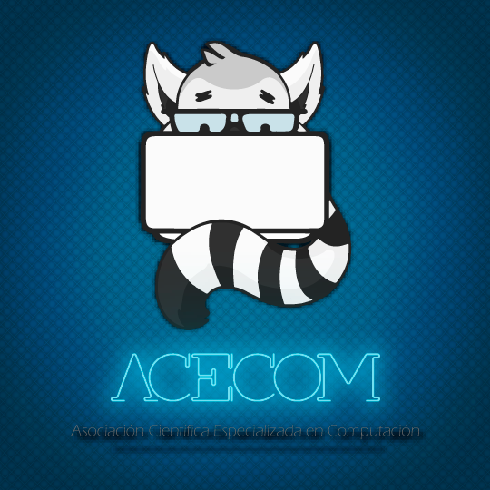
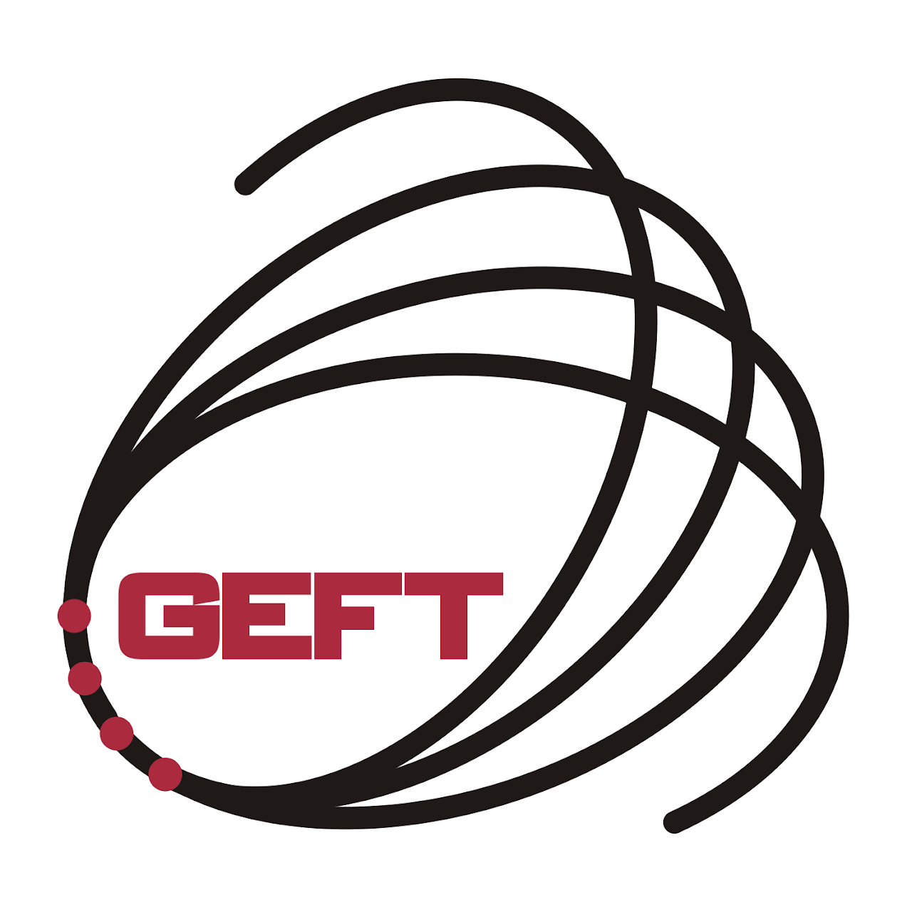
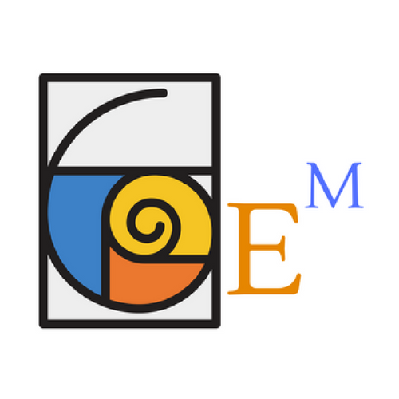
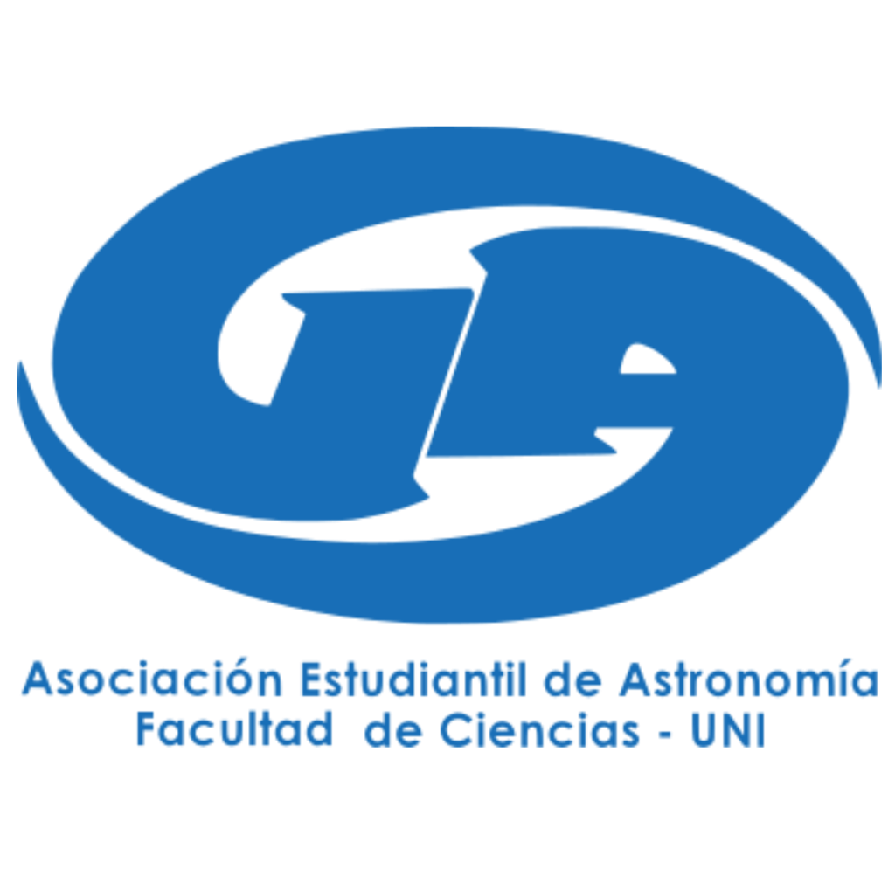
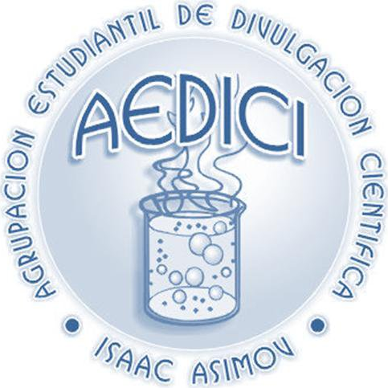
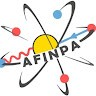
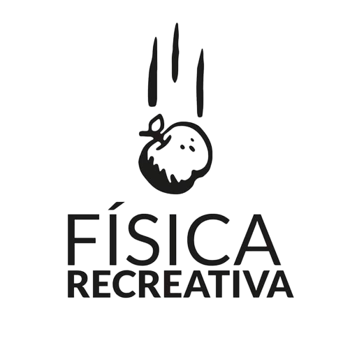

Inicio · Comunidad
Agrupaciones Estudiantiles FC
Organizaciones científicas, tecnológicas y académicas autogestionadas por estudiantes de la Facultad de Ciencias de la Universidad Nacional de Ingeniería.
Organizaciones Científicas y Tecnológicas
Espacios universitarios orientados a la investigación avanzada, desarrollo de proyectos, divulgación y capacitación continua.

ACECOM
Asociación Científica Especializada en Computación
La Asociación Científica Especializada en Computación (ACECOM) es una organización estudiantil enfocada en la investigación y el desarrollo de diversos temas en Ciencias de la Computación (Computer Science).
Objetivo Institucional: Difundir los avances y fundamentos de la computación mediante conversatorios y seminarios en donde los estudiantes puedan compartir sus conocimientos académicos y confraternizar.
Áreas de Especialización de ACECOM
Estudio integral de las variantes de la IA con el fin de diversificar el conocimiento en la comunidad universitaria, promoviendo la investigación y el análisis de sus impactos éticos.
Creación de soluciones de software orientadas a la conexión entre usuarios e información, empleando estándares y tecnologías web modernas.
Investigación de ciberseguridad, protocolos criptográficos, análisis de vulnerabilidades y desarrollo de proyectos técnicos de capacitación.
Aprendizaje y programación de aplicaciones interactivas mediante motores de videojuegos sustentados en conceptos de matemática y algoritmia.

GEFT-UNI
Grupo Estudiantil de Física Teórica
El Grupo Estudiantil de Física Teórica (GEFT-UNI) es una asociación orientada a generar una comunidad académica activa para el aprendizaje y la discusión sobre los fundamentos de la física teórica.
Cuenta con subgrupos de trabajo especializados que complementan la formación académica formal, organizando seminarios técnicos y divulgativos desarrollados por los propios estudiantes integrantes y docentes invitados.

GEM
Grupo Estudiantil de Matemáticas
El Grupo Estudiantil de Matemáticas (GEM) fue creado por iniciativa de estudiantes de la carrera de Matemática interesados en profundizar en el conocimiento avanzado de esta ciencia.
Desarrolla cada semestre un ciclo de exposiciones denominado Seminarios de Divulgación Matemática, impartidos por profesores de distintas universidades nacionales e internacionales. Los seminarios presentan tópicos de especialización para estudiantes de pregrado y fomentan un punto de encuentro entre la comunidad matemática.

AEA / AstroFC
Asociación Estudiantil de Astronomía (hasta 2018 denominado Grupo Astronomía)
La Asociación Estudiantil de Astronomía (AEA) está integrada en su mayoría por estudiantes de la Escuela Profesional de Física de la UNI, egresados e investigadores con el acompañamiento de un docente asesor. Muchos de sus exmiembros son actualmente profesores en la FC-UNI e investigadores en el Instituto Geofísico del Perú (IGP), la CONIDA e instituciones astronómicas internacionales. Apoya activamente las labores de divulgación del Observatorio Astronómico (OA-UNI).
Objetivos Institucionales:
- Difundir la Astronomía como ciencia dentro de todo medio social que se requiera.
- Promover el estudio teoricopráctico mediante divulgación académica y científica.
- Promover la interacción e incorporación técnica/académica con instituciones como el IGP, CONIDA, ON Brasil y CU Boulder.
- Promover la adquisición de equipamiento astronómico y asignación de ambientes adecuados en la universidad.

AEDICI
Agrupación Estudiantil de Divulgación Científica "Isaac Asimov"
La Agrupación Estudiantil de Divulgación Científica – Isaac Asimov (AEDICI) promueve la ciencia y el fortalecimiento de la Escuela Profesional de Química mediante visitas guiadas a laboratorios de investigación, ferias científicas y talleres didácticos.
Misión: Difundir la ciencia e incentivar vocaciones científicas en la juventud, colaborando estrechamente con la Escuela de Química en eventos de extensión académica.

AFINPA
Asociación Estudiantil de Física Nuclear, Partículas y Aplicaciones
La Asociación Estudiantil de Física Nuclear, Partículas y Aplicaciones (AFINPA) es un grupo especializado en la investigación y divulgación de la física de partículas elementales, altas energías, detección nuclear y aplicaciones tecnológicas en ciencias de los materiales y medicina nuclear.
GREIC
Asociación Estudiantil de Instrumentación Científica
La Asociación Estudiantil de Instrumentación Científica (GREIC) promueve el diseño, modelado e implementación de sistemas de medición y control de variables físicas, químicas y biológicas mediante la integración de electrónica, mecánica y óptica.
Ejes de Desarrollo Técnico: Robótica aplicada, automatización industrial, Internet de las Cosas (IoT), Inteligencia Artificial, Óptica Avanzada y Tecnología Aeroespacial (nanosatélites y sensores).

Física Recreativa
Asociación Estudiantil de Física Recreativa (AEFR-UNI)
La Asociación Estudiantil de Física Recreativa (AEFR-UNI) realiza talleres y demostraciones experimentales de mecánica, fluidos, electromagnetismo y óptica para acercar el método científico y la física a instituciones educativas y la comunidad.
Representación Estudiantil y Gobernanza
La Facultad de Ciencias cuenta con representación estudiantil activa elegida democráticamente por votación estamental. Para comunicaciones institucionales gremiales, el correo oficial de contacto es cec.fc@uni.edu.pe.
Gremio estudiantil encargado de defender los derechos universitarios y canalizar solicitudes ante el Decanato (Contacto: cec.fc@uni.edu.pe).
Representantes electos ante el Consejo de Facultad con voz y voto en la toma de decisiones institucionales de la FC.
Comisiones Mixtas en Concursos Docentes
En los procesos de evaluación y contratación docente, los estudiantes integran comisiones mixtas con voz y voto para calificar expedientes y clases magistrales públicas, velando por la transparencia y calidad académica.